Este texto es un resumen de una ponencia basada en mi tesis de magíster, presentada en el 10° Congreso de Sociología Pre-ALAS 2018 en la Universidad Arturo Prat, Iquique, en el grupo de trabajo (GT) 17 Sociología del cuerpo y las emociones.
Esta ponencia se basa en mi investigación de tesis de magíster, terminada hace pocas semanas. Se trató de una investigación teórica, en la cual se analizó mediante teoría fundamentada un corpus correspondiente a papers y capítulos de libros académicos en búsqueda de elementos teóricos y conceptuales para poder comprender la producción del fenómeno de la estigmatización social de la gordura.
(Todas las imágenes son de autoría y propiedad de Shoog McDaniel, y fueron utilizadas con su autorización)
Estigma
Cuando hablamos de la estigmatización social de la gordura, nos referimos a la manera en la cual la gordura, en tanto marca corporal, resulta socialmente estigmatizada.
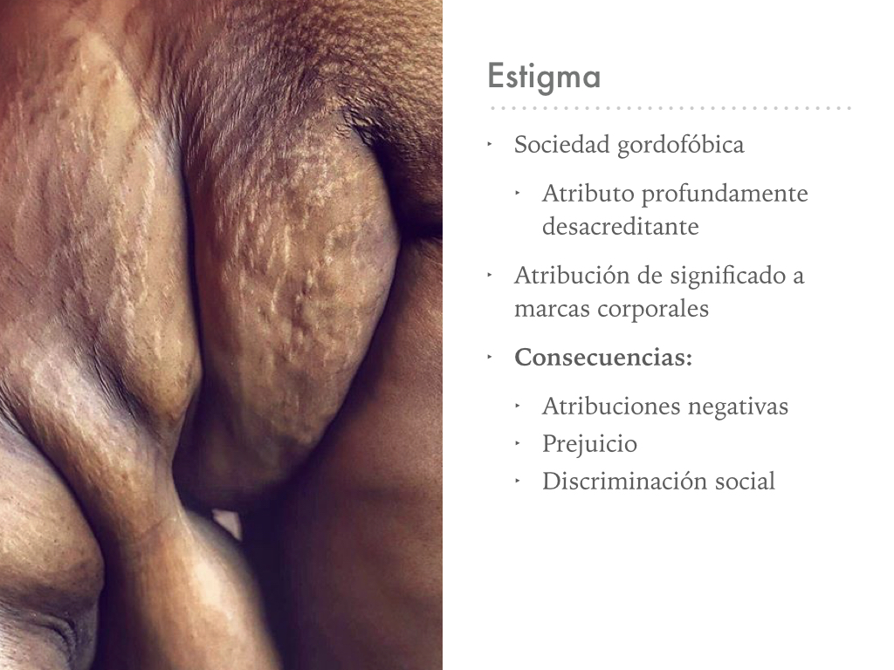
Vivimos en una sociedad gordofóbica, donde ya sea en medios de comunicación, en conversaciones, en las imágenes que nos rodean, en redes sociales, y en las producciones culturales, percibimos cómo la gordura se ha vuelto un atributo profundamente desacreditante,siguiendo el concepto de Erving Goffman.
Por lo tanto, a partir de la estigmatización se atribuyen significados sociales a un atributo físico, construyéndolo de manera negativa.
Para el análisis de este fenómeno, se divide la temática en dos dimensiones.
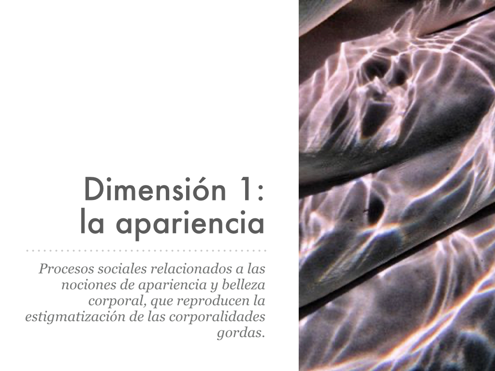
Apariencia
La primera dimensión es la de la apariencia, entendiéndola como la forma en que el cuerpo aparece o se presenta ante la mirada de los otros.
Siguiendo a Elizabeth Grosz, entendemos la apariencia como la configuración perceptible del cuerpo, como una superficie inscrita por significados y codificaciones sociales.
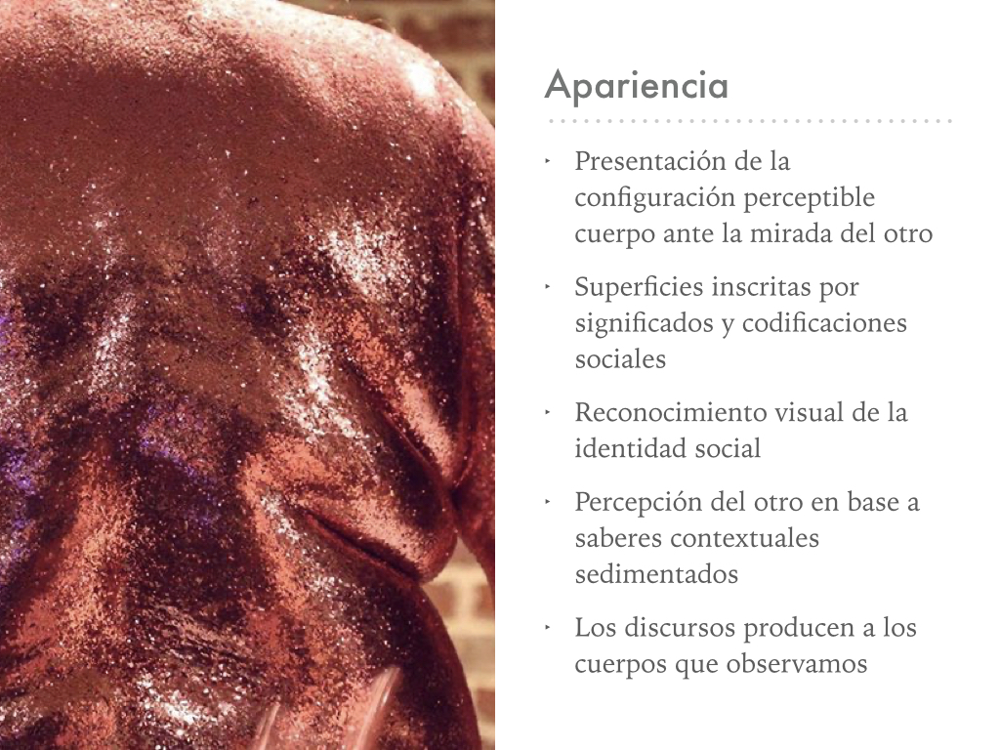
A través de estas codificaciones distribuidas en la superficie del cuerpo, anticipamos la posición social y atributos individuales del otro, volviéndonos capaces de percibir la identidad social, en términos de Goffman.
En ese sentido, la capacidad de percibir a los cuerpos implica una forma de lectura de esta superficie, que no es individual, sino que compartida.
Según Linda Alcoff, la percepción del cuerpo depende de la circulación de significados y saberes contextuales sedimentados, es decir que a través de nuestra socialización en una sociedad gordofóbica, se sedimentan en nuestras conciencias distintos saberes y discursos sobre qué significan los cuerpos gordos, cuáles son los cuerpos ideales, cual es el valor social de la delgadez.
Como planteó Foucault, los discursos no solamente describen a los objetos, sino que forman a los objetos que refieren. El discurso construye cuerpos. Gracias a los significados circulantes podemos hacer sentido de los cuerpos que percibimos.
BELLEZA
Los cuerpos son evaluados de acuerdo a normas sociales que valorizan ciertos tipos y formas de apariencia corporal, basándose en idealesculturales e históricos de belleza.
Hoy, el ideal corresponde a la delgadez y tonificación corporal, donde los cuerpos disciplinados, producidos a través de la restricción y el trabajo corporal son valorizados y deseados socialmente.
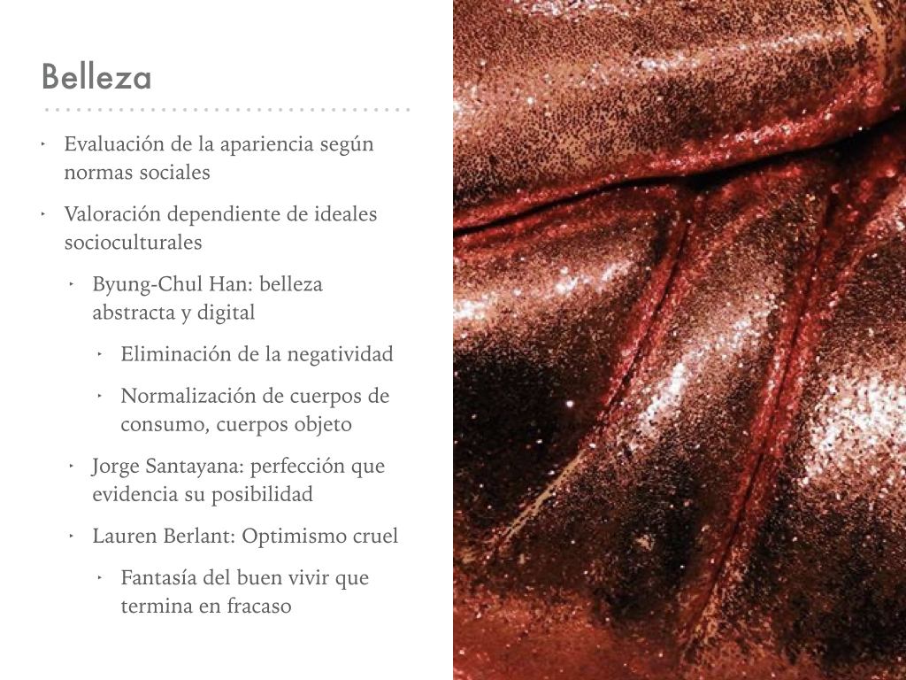
Según Byung Chul Han, el ideal en la modernidad tardocapitalista occidental se remite a los cuerpos pulcros y lisos; es decir, la búsqueda de una perfección abstracta, inclusive digital, que se ubica en antítesis contra las apariencias naturales, “descuidadas”, carentes de trabajo corporal. En este sentido, la producción de cuerpos ideales se basa en la remoción de toda negatividad, imperfección, sobra y extrañeza, para producir cuerpos-objeto que no desafíen al status quo, que sean completamente positivos, normalizados: cuerpos de consumo.
En este sentido, el ideal de belleza moderno determina la modificación y normalización de los cuerpos gordos, cuya existencia imperfecta y excesiva significa una transgresión al ideal de belleza, y un desafío a sus preceptos.
La belleza también es entendida por Jorge Santayana como manifestaciones de perfección, cuyas imágenes percibimos constantemente en la sociedad de consumo, y que a su vez evidenciarían que los cuerpos perfectos son posibles. Si la delgadez es posible, entonces la mera existencia de la gordura resulta cuestionada.
Por lo tanto, la idealización de los cuerpos ultra delgados aumenta la brecha entre los cuerpos indeseables y los deseables, agudizando al ideal de belleza y extendiendo al estigma de la gordura a cuerpos cada vez menos gordos.
La delgadez se transforma en un proyecto para lograr el ideal, que resulta optimista y cruel, usando el concepto de Laurent Berlant, puesto que la cultura de consumo nos plantea que es posible adelgazar y lograr el ideal corporal, construyendo a la gordura como cuerpos que podrían ser superables. Pero al mismo tiempo, los intentos de adelgazamiento se reducen constantemente al fracaso, volviendo a estos cuerpos en minorías privilegiadas, y extendiendo la disatisfacción corporal.
MALEABILIDAD
Denominamos maleabilidad a esta idea donde el cuerpo estaría bajo el control individual, y que sería libremente alterable.
Según Susan bordo, esto refiere a fantasías de mejoramientoilimitado del cuerpo, que desafían incluso a su propia materialidad, es decir, su posibilidad de devenir.
A partir de esta idea, los individuos gestionan la presión estética de adecuarse a los ideales socioculturales de belleza, a través de valores y habilidades que son neoliberales, como la fuerza de voluntad, el esfuerzo, y la elección racional de consumo.
En base a estos ideales neoliberales, el cuerpo se vuelve un logro, y la apariencia reflejaría significados acerca de las capacidades individuales de los sujetos, enmarcados en valores y habilidades neoliberales.
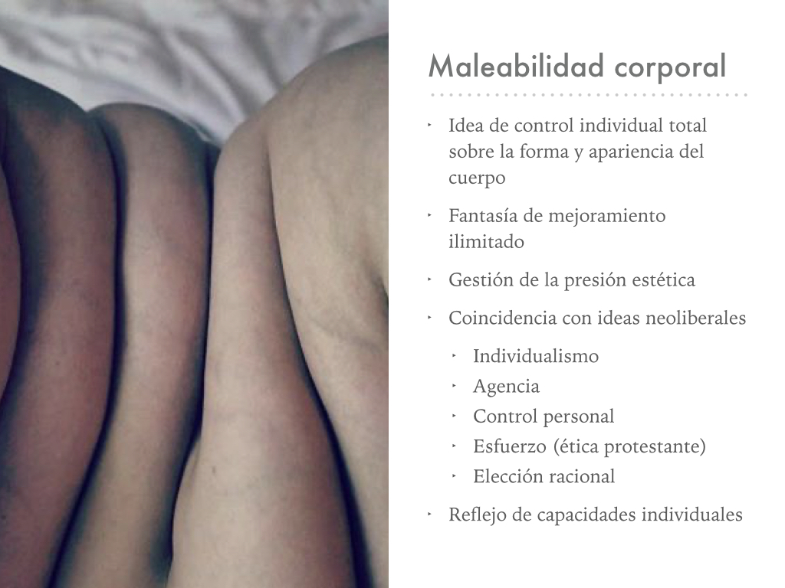
INTERPRETACIÓN E INSCRIPCIÓN
Los cuerpos gordos son interpretados desde la dimensión de la apariencia como cuerpos estéticamente invalidados, por desajustarse al ideal, y que su producción dependería de esta carencia valores y habilidades neoliberales, expresada en la suposición de que los cuerpos gordos no incurren, supuestamente, en la práctica de la dieta, que eminentemente producirían estos cuerpos ideales.
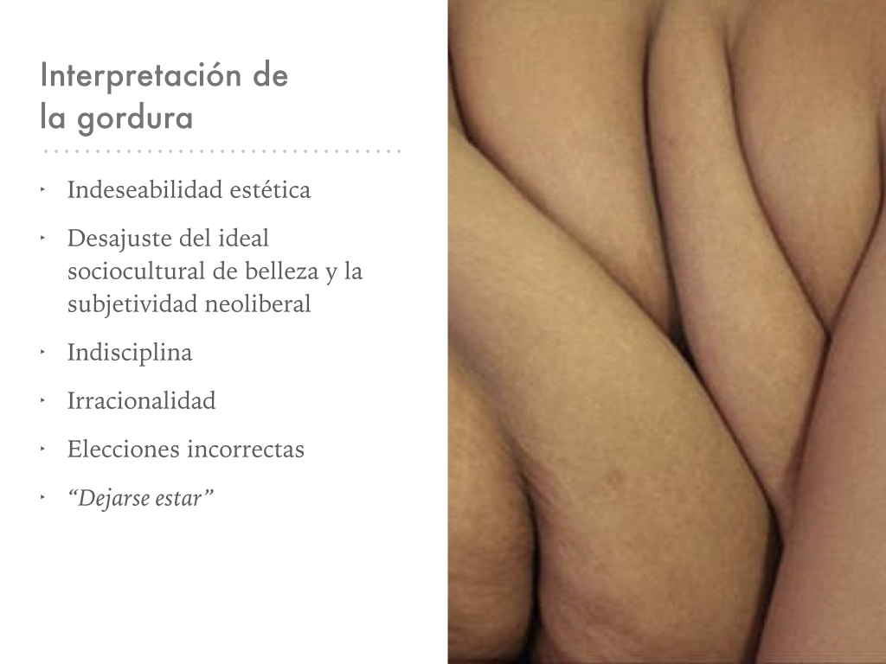
Se interpreta a las personas gordas como sujetos que renuncian al esfuerzo, que son incapaces de esgrimir la racionalidad neoliberal,por lo tanto, su raciocinio estaría dominado por el placer, la pasión, los excesos. Serían cuerpos que, como se dice, “se dejan estar”, en vez de optimizarse según los ideales socioculturales.
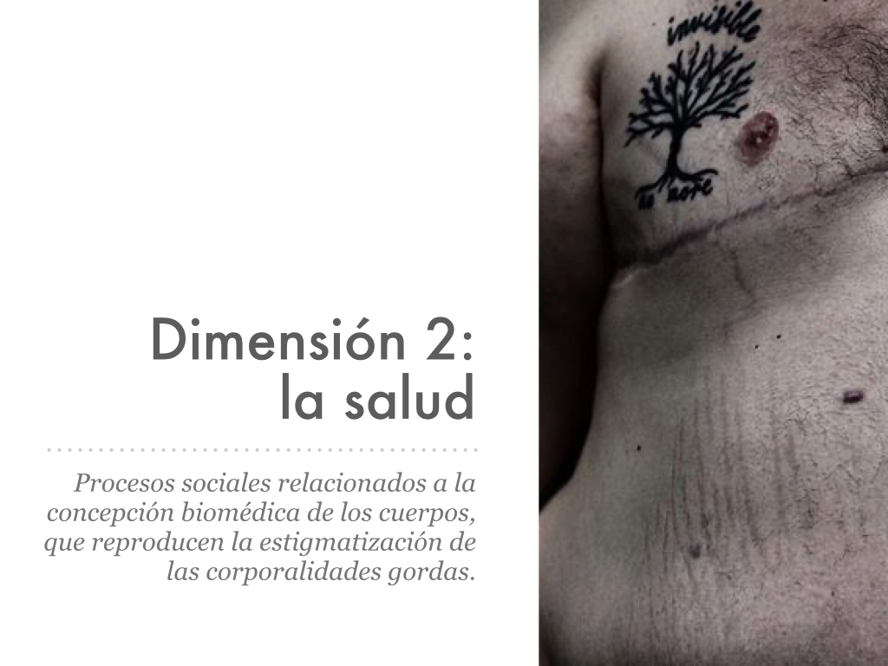
Salud
Pasando a la segunda dimensión, entonces, nos abocamos a los procesos en que los cuerpos diferentes, desviados de la norma, pasan a ser interpretados por el regimen médico como cuerpos patológicos.
BIOMEDICINA
Entre los regímenes médicos, se denomina biomedicina al modelo médico hegemónico vigente en las sociedades occidentales. Se trata de un paradigma médico biologicista, individualista, que interpreta a los cuerpos en base a datos biológicos que son clasificados en categorías de enfermedad. Es decir, la diferencia corporal es entendida como una desviación del peso “normal”, y por ende, como enfermedad. Esto se evidencia en los términos médicos usados para describir a los cuerpos gordos, como sobrepeso, obesidad, y obesidad mórbida, que son etiquetas que transforman totalmente el significado del peso corporal.
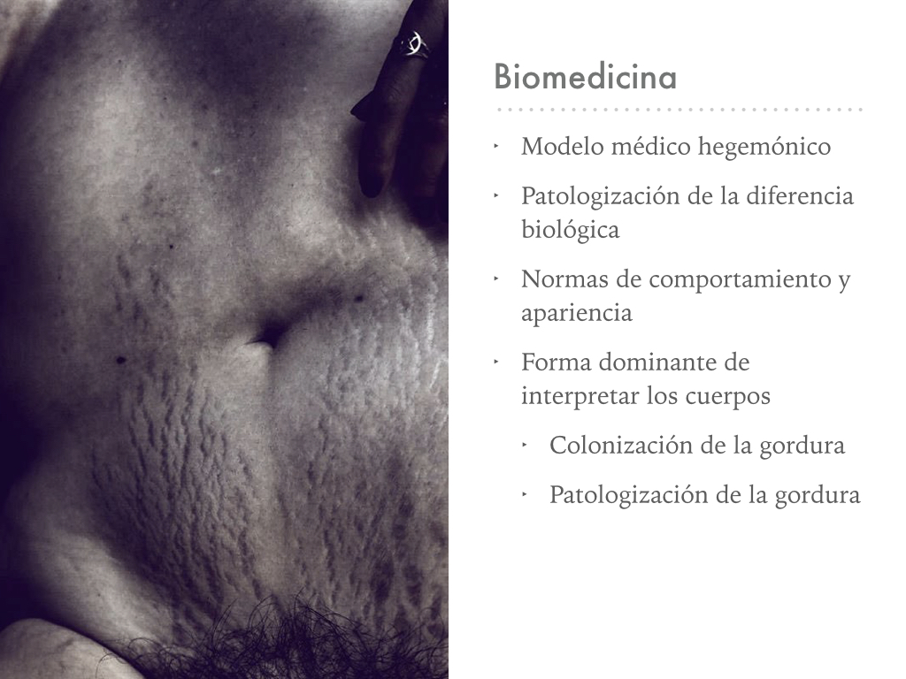
La biomedicina, entonces, plantea normas de comportamientolegitimadas por su saber científico, y su institucionalidad, y a su vez también plantea normas de apariencia, por la importancia de los cuerpos de expresar el verse sano, la apariencia saludable resumida incorrectamente en la delgadez.
Los cuerpos son medicalizados por la biomedicina, dado que la autoridad de su discurso la postula como el medio de interpretación dominante de los cuerpos. La biomedicina determina qué somos y qué debemos ser.
Esto lo entendemos como una colonización, donde lo cuerpos gordos pasan de ser una mera diferencia corporal a ser interpretados como problemas médicos, transformando al cuerpo gordo en un territorio donde la medicina clama su capacidad de gobierno.
El discurso médico reconfigura a los cuerpos gordos en cuerpos constantemente diagnosticados como insalubres, como enfermos, y que llaman a su normalización en términos médicos, su adelgazamiento.
La gordura, entonces, es patologizada como un cuerpo enfermo, un cuerpo anormal, y que al mismo tiempo estaría confesando una desobediencia en torno a la norma de lo que es la salud.
Por lo tanto, la salud tiene un subtexto importante de control sobre los cuerpos. Se definiría por el control del yo, mantener a la corporalidad dentro de los márgenes de normalidad, donde la gordura expresaría una pérdida del control sobre las prácticas de salud y prevención prescritas.
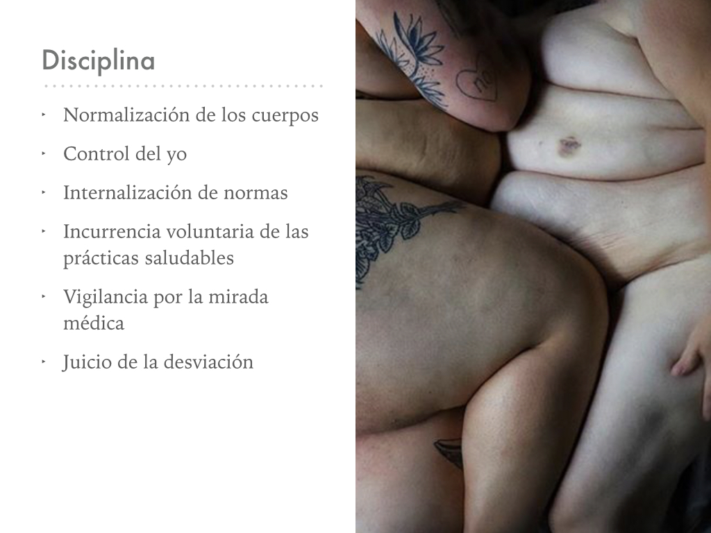
La salud, entonces, requiere de una disciplina que haga propia e internalice las normas médicas en la forma de deseo.
Esto se reproduce a través de la vigilancia, donde las miradas colonizadas por el discurso médico trasladan al juicio médico hacia lo social, donde la vigilancia garantiza el funcionamiento del poder al hacer visibles y transformar en problemas médicos a los cuerpos diferentes, estigmatizados.
Entonces, a través de la socialización dentro del marco de vigilancia médica, aprendemos (se nos enseña) cómo vivir, cómo entender, y también como modificar los cuerpos desde lo que se denomina biopedagogías, siempre respecto al saber/poder médico.
La vida diaria resulta regulada por la biomedicina desde el biopoder, que es la regulación y gobierno del cuerpo y la vida a partir de un regimen de lo deseable y lo legítimo, es decir, esta idea y prácticas de “lo saludable” que regulan nuestras vidas y que se ligan directamente con la delgadez.
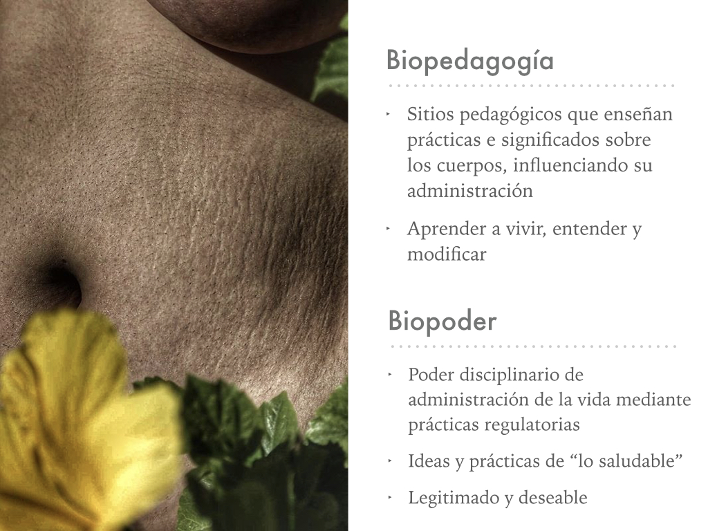
GUBERNAMENTALIDAD
Esto relaciona íntimamente a la biomedicina con la idea de gubernamentalidad, que se trata del gobierno de los deseos, donde no se trata de un poder represivo que reprima los deseos, sino que es un poder que causa la emergencia de los deseos bajo términos específicosque coinciden con el statu quo, en este caso, lo saludable.
Entonces, como los sujetos se regulan voluntariamente en base a la idea de lo saludable, el gobierno de los cuerpos se basa en la reproducción de la deseabilidad de la delgadez y la indeseabilidad de la gordura, que son internalizadas como ideales corporales y también como conjuntos de prácticas disciplinares, en la forma de conductas normalizadas bajo los criterios de la biomedicina.
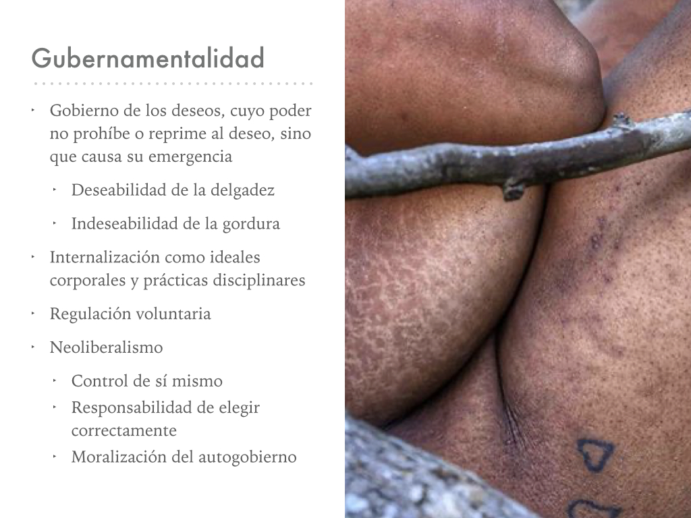
Desde la gubernamentalidad, podemos ver cómo la biomedicina coincide con el neoliberalismo, como dos discursos que pretenden gobernar los cuerpos poniendo alto énfasis en el dominio y control de sí mismo, en la dependencia de la voluntad personal, y en la moralización del autogobierno de la conducta individual.
INTERPRETACIÓN E INSCRIPCIÓN
El cuerpo gordo es interpretado desde la biomedicina como un cuerpo enfermo y en necesidad de normalización, que es producido por elecciones incorrectas e irresponsabilidades, y que por lo tanto es un cuerpo moralizado en clave negativa, como un cuerpo que sería irracionalrespecto a lo estatuido como deseable; es decir, una subjetividad que poseería deseos incorrectos, y que por ende se desajusta de las normas de salud y subjetividad neoliberal.
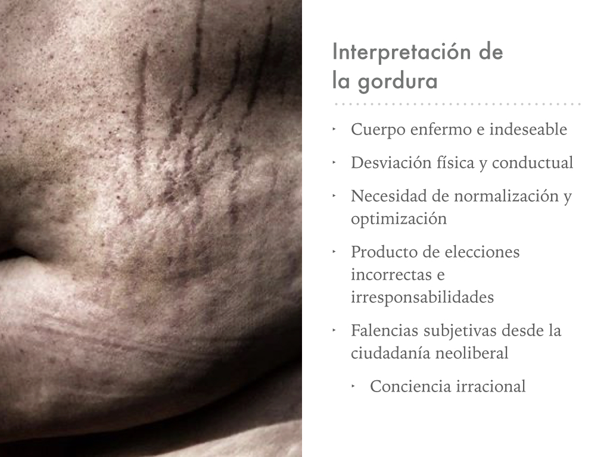
Conclusiones
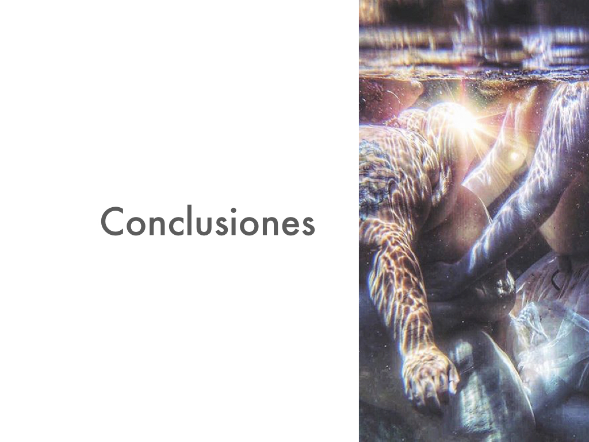
Como conclusiones podemos ver cómo la gordura es construida discursivamente como el opuesto del ideal de belleza corporal moderno, y que a su vez este ideal de belleza se condice con el ideal de salud, y con la apariencia del ciudadano responsable en clave neoliberal, todos ellos corporalizados en el cuerpo delgado.
De acuerdo al discurso hegemónico, la gordura estaría reflejando elecciones, voluntades, deseos y capacidades de los individuos a través de sus signos y marcas corporales. Se trataría de una corporalidad inmoral, pues estos reflejos indicarían su desajuste respecto de los supuestos de participación en la sociedad neoliberal, expresando falencias inherentes a su subjetividad.
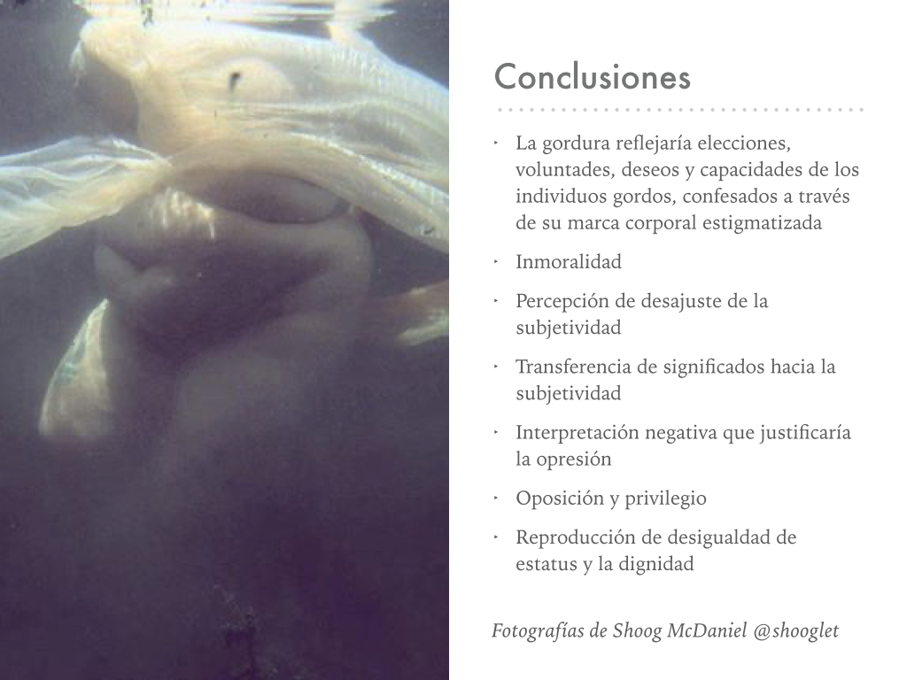
El estigma tiene esta capacidad de posibilitar la percepción de desajustes de la subjetividad gorda: los significados que se asocian a la gordura, como la indeseabilidad, enfermedad, e irresponsabilidad, son transferidos hacia el sujeto. El sujeto estaría expresando estas cualidades a partir la confesión de comportamientos incorrectos a partir de su marca corporal.
Desde la estimatización de una característica física, los individuos son capaces de interpretar discursivamente una marca corporal como la simbolización de un amplio conjunto de características negativas sobre las personas gordas, posibilitando su inferiorización y opresión.
En el ejercicio de esta opresión, la demarcación de la diferencia, de la oposición entre el nosotros y el ellos, posibilita el privilegio de unos pocos.
Entonces, la estigmatización es un mecanismo que habilita la reproducción de desigualdad social, a través de la negación de toda posibilidad de identificación positiva en categorías de alta significancia social, tales como la salud y la belleza, en función de una distribución desigual del estatus social y la dignidad.